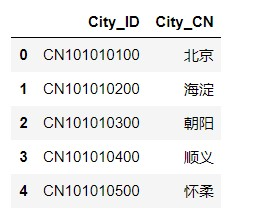

工具展示如下： 前言 本次课程讲解如何使用 PyQt5 制作天气查询软件。仅供学习和参考。
开发环境 准备工作 首先要获取不同城市对应的天气代码，可以从https://www.heweather.com/documents/city.html 网站下载 csv 文件（文末获取 csv 文件），拿到 csv 文件，我们首先要进行数据预处理工作。抓取接口的话可以使用Google浏览器开发者工具进行。
1 2 3 4 5 6 7 import pandas as pd # 将下载好的文件命名为 'city_code.csv'，并删除 header file = pd.read_csv('city_code.csv') # 选取需要的两列信息 file = file.loc[:,['City_ID', 'City_CN']] # 读取前五行信息 file.head()

1 2 3 4 5 6 7 8 9 10 11 12 13 14 15 16 17 18 19 20 21 22 # 匹配 City_ID 中的数字 def convert(x): pat = re.compile('(\d+)') return pat.search(x).group() file['City_ID_map'] = file['City_ID'].map(convert) # 建立城市与代码之间的映射关系 def city2id(file): code_dict = {} key = 'City_CN' value = 'City_ID_map' for k, v in zip(file[key], file[value]): code_dict[k] = v return code_dict code_dict = city2id(file) # 将所得的字典数据存储为 txt 文件 import json filename = 'city_code.txt' with open(filename, 'w') as f: json.dump(code_dict, f)
将字典存储为 txt 文件后，以后我们只需读取文件，再获取字典：
1 2 with open(filename, 'r') as f: text = json.load(f)
UI设计 使用 Qt Designer，我们很容易设计出以下界面：
主题逻辑如下： 我们这次使用的 api 接口为：’http://wthrcdn.etouch.cn/weather_mini?citykey={code}'，code 就是之前处理过的城市代码，比如常州的城市代码为：101191101。替换掉变量 code ，网站返回给我们一段 json 格式的文件：
1 2 3 4 5 6 7 8 9 10 # 天气情况 data = info_json['data'] city = f"城市：{data['city']}\n" today = data['forecast'][0] date = f"日期：{today['date']}\n" now = f"实时温度：{data['wendu']}度\n" temperature = f"温度：{today['high']} {today['low']}\n" fengxiang = f"风向：{today['fengxiang']}\n" type = f"天气：{today['type']}\n" tips = f"贴士：{data['ganmao']}\n"
当然，我们首先要使用 requests,get 方法，来获取这段 json 代码。
1 2 3 4 5 6 7 8 9 10 11 12 13 14 15 16 17 18 19 20 def query_weather(code): # 模板网页 html = f'http://wthrcdn.etouch.cn/weather_mini?citykey={code}' # 向网页发起请求 try: info = requests.get(html) info.encoding = 'utf-8' # 捕获 ConnectinError 异常 except requests.ConnectionError: raise # 将获取的数据转换为 json 格式 try: info_json = info.json() # 转换失败提示无法查询 except JSONDecodeError: return '无法查询'
下面我们介绍下本文用到的控件方法：
1 2 3 4 5 6 7 8 9 10 # 将 textEdit 设置为只读模式 self.textEdit.setReadOnly(True) # 将鼠标焦点放在 lineEdit 编辑栏里 self.lineEdit.setFocus() # 获取 lineEdit 中的文本 city = self.lineEdit.text() # 设置文本 self.textEdit.setText(info) # 清空文本 self.lineEdit.clear()
为查询按钮设置快捷键：
1 2 3 4 def keyPressEvent(self, e): # 设置快捷键 if e.key() == Qt.Key_Return: self.queryWeather()
最后，我们可以使用 Pyinstaller -w weather.py 打包应用程序，但是要记得打包完，将 city_code.txt 复制到 dist/weather 文件夹下，否则程序无法运行。
次の記事
python 构建SSH僵尸网络
前の記事
python 如何操作word？